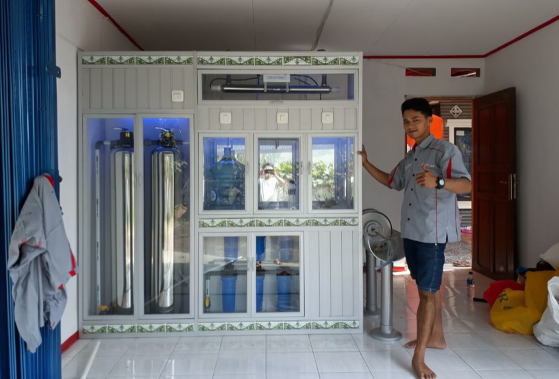
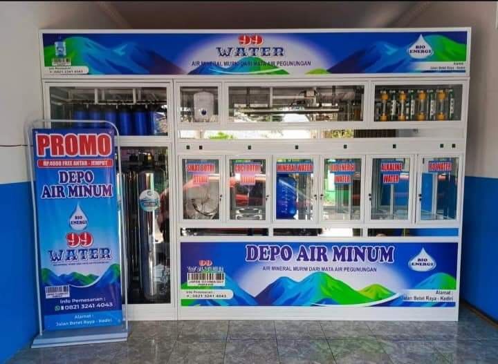
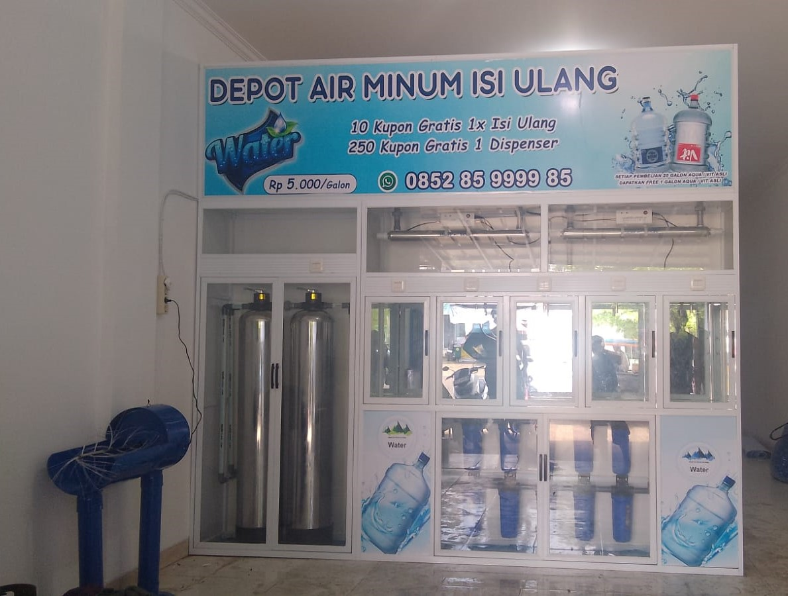
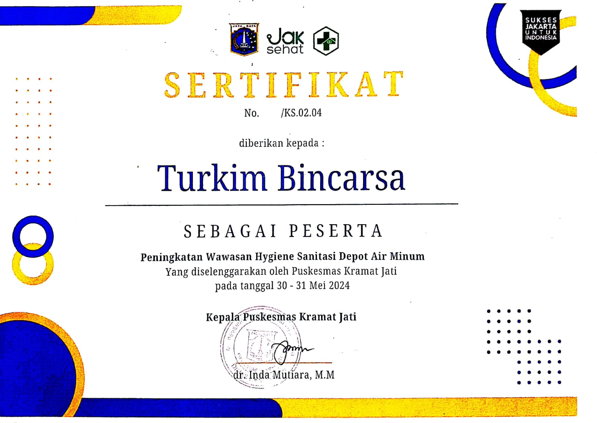

01
Rakit Depot Air Minum Isi Ulang
Perakitan depot air minum isi ulang dengan konsep yang rapi dan disesuaikan dengan kebutuhan lokasi usaha
Jaya Giri membantu dari perencanaan sampai pemasangan, dengan tampilan depot yang bersih dan sistem yang disiapkan untuk kebutuhan usaha Anda
Ideal untuk Anda yang ingin memulai usaha air minum isi ulang
Jaya Giri menyediakan berbagai layanan mulai dari perakitan depot air minum, sistem RO, perawatan, hingga kebutuhan pendukung usaha dengan pengerjaan yang bersih dan teliti
Perakitan depot air minum isi ulang dengan konsep yang rapi dan disesuaikan dengan kebutuhan lokasi usaha
Perakitan depot air minum RO untuk kebutuhan usaha dengan penataan sistem dan komponen yang terstruktur
Layanan perbaikan dan perawatan untuk membantu menjaga peralatan depot tetap siap digunakan
Tersedia beberapa pilihan paket bongkar yang dapat disesuaikan dengan kebutuhan dan kondisi depot
Membantu proses pemindahan depot agar peralatan dan komponen dapat ditangani dengan lebih teratur
Melayani pengiriman tutup galon untuk membantu memenuhi kebutuhan operasional depot dan usaha air minum
Setiap pengerjaan dilakukan dengan memperhatikan kualitas produk, ketelitian pemasangan, serta kebutuhan operasional agar depot dapat digunakan secara optimal
Mengutamakan penggunaan produk dan perlengkapan berkualitas untuk menghasilkan air yang bersih dan layak digunakan
Dikerjakan oleh teknisi berpengalaman dengan memperhatikan ketepatan pemasangan dan kebutuhan setiap depot
Konsultasikan kebutuhan depot Anda bersama kami untuk mendapatkan solusi yang sesuai dengan kapasitas dan kebutuhan usaha
Depot disiapkan dengan memperhatikan kebutuhan operasional agar dapat digunakan secara optimal untuk mendukung kegiatan usaha
Dokumentasi beberapa depot air minum yang telah kami rakit dan kerjakan oleh teknisi Jaya Giri sebagai bagian dari komitmen kami terhadap kualitas dan profesionalitas.



Komitmen Jaya Giri dalam memberikan layanan pembuatan dan perakitan depot air minum yang profesional, berkualitas, dan terpercaya. Sertifikasi yang dimiliki menjadi bagian dari upaya kami untuk menjaga standar pelayanan serta kualitas pekerjaan bagi setiap pelanggan.
